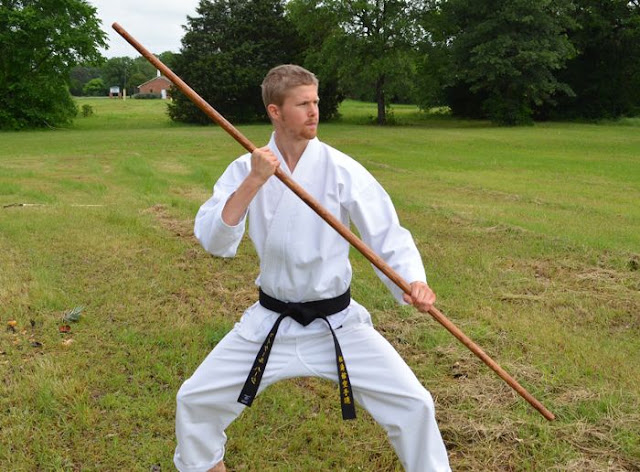

01
Bō
棒
The Bō is a traditional long staff associated with Okinawan Kobudo. It is one of the most recognisable weapon within the tradition.
The study of the Bō forms part of the traditional Kobudo curriculum and places emphasis on coordination, posture, movement and disciplined training.